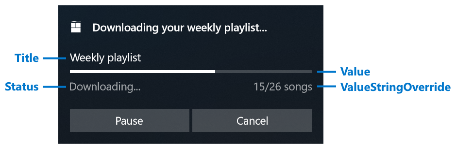

Toast progress bar and data binding
Using a progress bar inside your toast notification allows you to convey the status of long-running operations to the user, like downloads, video rendering, exercise goals, and more.
Important
Requires Creators Update and 1.4.0 of Notifications library: You must target SDK 15063 and be running build 15063 or later to use progress bars on toasts. You must use version 1.4.0 or later of the UWP Community Toolkit Notifications NuGet library to construct the progress bar in your toast's content.
A progress bar inside a toast can either be "indeterminate" (no specific value, animated dots indicate an operation is occurring) or "determinate" (a specific percent of the bar is filled, like 60%).
Important APIs: NotificationData class, ToastNotifier.Update method, ToastNotification class
Note
Only Desktop supports progress bars in toast notifications. On other devices, the progress bar will be dropped from your notification.
The picture below shows a determinate progress bar with all of its corresponding properties labeled.

| Property | Type | Required | Description |
|---|---|---|---|
| Title | string or BindableString | false | Gets or sets an optional title string. Supports data binding. |
| Value | double or AdaptiveProgressBarValue or BindableProgressBarValue | false | Gets or sets the value of the progress bar. Supports data binding. Defaults to 0. Can either be a double between 0.0 and 1.0, AdaptiveProgressBarValue.Indeterminate, or new BindableProgressBarValue("myProgressValue"). |
| ValueStringOverride | string or BindableString | false | Gets or sets an optional string to be displayed instead of the default percentage string. If this isn't provided, something like "70%" will be displayed. |
| Status | string or BindableString | true | Gets or sets a status string (required), which is displayed underneath the progress bar on the left. This string should reflect the status of the operation, like "Downloading..." or "Installing..." |
Here's how you would generate the notification seen above...
new ToastContentBuilder()
.AddText("Downloading your weekly playlist...")
.AddVisualChild(new AdaptiveProgressBar()
{
Title = "Weekly playlist",
Value = 0.6,
ValueStringOverride = "15/26 songs",
Status = "Downloading..."
});
However, you'll need to dynamically update the values of the progress bar for it to actually be "live". This can be done by using data binding to update the toast.
Using data binding to update a toast
Using data binding involves the following steps...
- Construct toast content that utilizes data bound fields
- Assign a Tag (and optionally a Group) to your ToastNotification
- Define your initial Data values on your ToastNotification
- Send the toast
- Utilize Tag and Group to update the Data values with new values
The following code snippet shows steps 1-4. The next snippet will show how to update the toast Data values.
using Windows.UI.Notifications;
using Microsoft.Toolkit.Uwp.Notifications;
public void SendUpdatableToastWithProgress()
{
// Define a tag (and optionally a group) to uniquely identify the notification, in order update the notification data later;
string tag = "weekly-playlist";
string group = "downloads";
// Construct the toast content with data bound fields
var content = new ToastContentBuilder()
.AddText("Downloading your weekly playlist...")
.AddVisualChild(new AdaptiveProgressBar()
{
Title = "Weekly playlist",
Value = new BindableProgressBarValue("progressValue"),
ValueStringOverride = new BindableString("progressValueString"),
Status = new BindableString("progressStatus")
})
.GetToastContent();
// Generate the toast notification
var toast = new ToastNotification(content.GetXml());
// Assign the tag and group
toast.Tag = tag;
toast.Group = group;
// Assign initial NotificationData values
// Values must be of type string
toast.Data = new NotificationData();
toast.Data.Values["progressValue"] = "0.6";
toast.Data.Values["progressValueString"] = "15/26 songs";
toast.Data.Values["progressStatus"] = "Downloading...";
// Provide sequence number to prevent out-of-order updates, or assign 0 to indicate "always update"
toast.Data.SequenceNumber = 1;
// Show the toast notification to the user
ToastNotificationManager.CreateToastNotifier().Show(toast);
}
Then, when you want to change your Data values, use the Update method to provide the new data without re-constructing the entire toast payload.
using Windows.UI.Notifications;
public void UpdateProgress()
{
// Construct a NotificationData object;
string tag = "weekly-playlist";
string group = "downloads";
// Create NotificationData and make sure the sequence number is incremented
// since last update, or assign 0 for updating regardless of order
var data = new NotificationData
{
SequenceNumber = 2
};
// Assign new values
// Note that you only need to assign values that changed. In this example
// we don't assign progressStatus since we don't need to change it
data.Values["progressValue"] = "0.7";
data.Values["progressValueString"] = "18/26 songs";
// Update the existing notification's data by using tag/group
ToastNotificationManager.CreateToastNotifier().Update(data, tag, group);
}
Using the Update method rather than replacing the entire toast also ensures that the toast notification stays in the same position in Action Center and doesn't move up or down. It would be quite confusing to the user if the toast kept jumping to the top of Action Center every few seconds while the progress bar filled!
The Update method returns an enum, NotificationUpdateResult, which lets you know whether the update succeeded or whether the notification couldn't be found (which means the user has likely dismissed your notification and you should stop sending updates to it). We do not recommend popping another toast until your progress operation has been completed (like when the download completes).
Elements that support data binding
The following elements in toast notifications support data binding
- All properties on AdaptiveProgress
- The Text property on the top-level AdaptiveText elements
Update or replace a notification
Since Windows 10, you could always replace a notification by sending a new toast with the same Tag and Group. So what's the difference between replacing the toast and updating the toast's data?
| Replacing | Updating | |
|---|---|---|
| Position in Action Center | Moves the notification to the top of Action Center. | Leaves the notification in place within Action Center. |
| Modifying content | Can completely change all content/layout of the toast | Can only change properties that support data binding (progress bar and top-level text) |
| Reappearing as popup | Can reappear as a toast popup if you leave SuppressPopup set to false (or set to true to silently send it to Action Center) |
Won't reappear as a popup; the toast's data is silently updated within Action Center |
| User dismissed | Regardless of whether user dismissed your previous notification, your replacement toast will always be sent | If the user dismissed your toast, the toast update will fail |
In general, updating is useful for...
- Information that frequently changes in a short period of time and doesn't require being brought to the front of the user's attention
- Subtle changes to your toast content, like changing 50% to 65%
Often times, after your sequence of updates have completed (like the file has been downloaded), we recommend replacing for the final step, because...
- Your final notification likely has drastic layout changes, like removal of the progress bar, addition of new buttons, etc
- The user might have dismissed your pending progress notification since they don't care about watching it download, but still want to be notified with a popup toast when the operation is completed